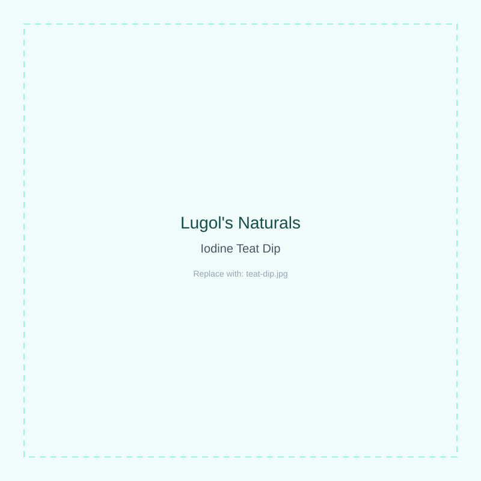
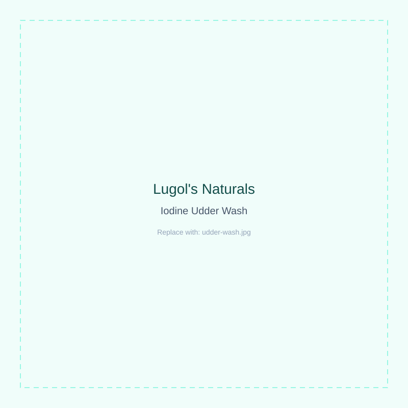
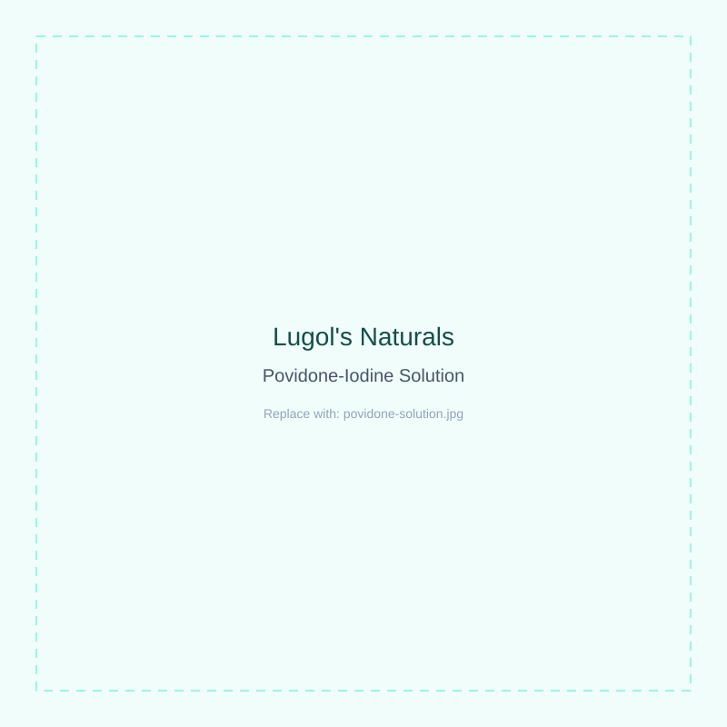
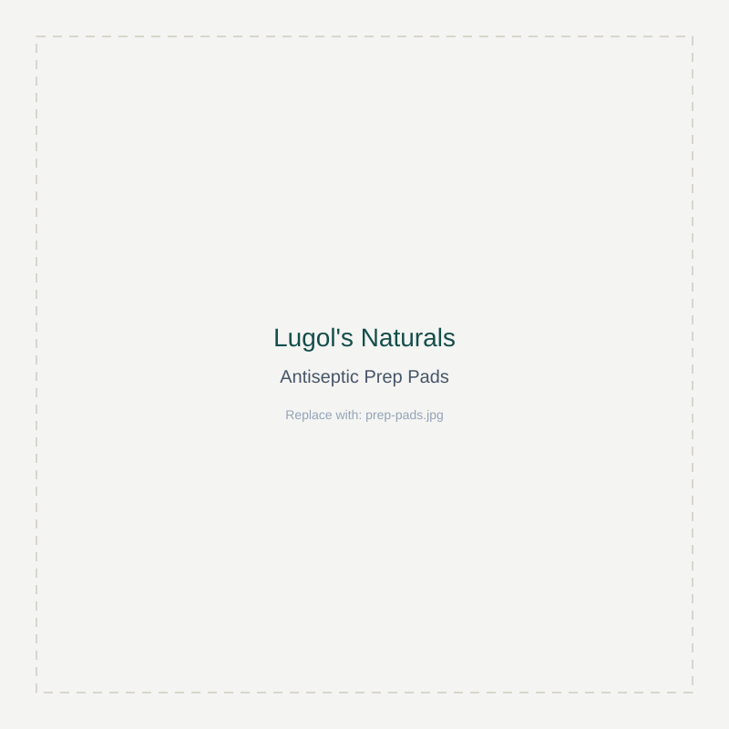
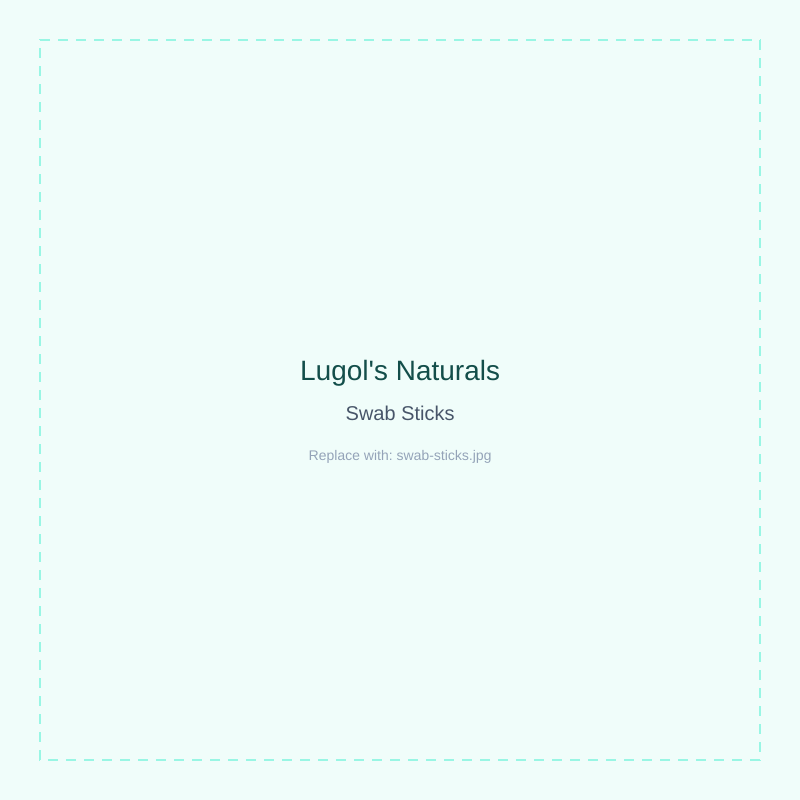
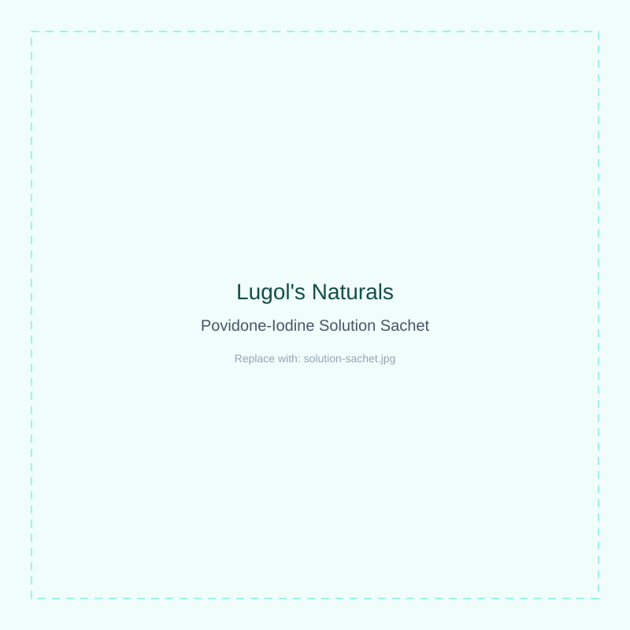
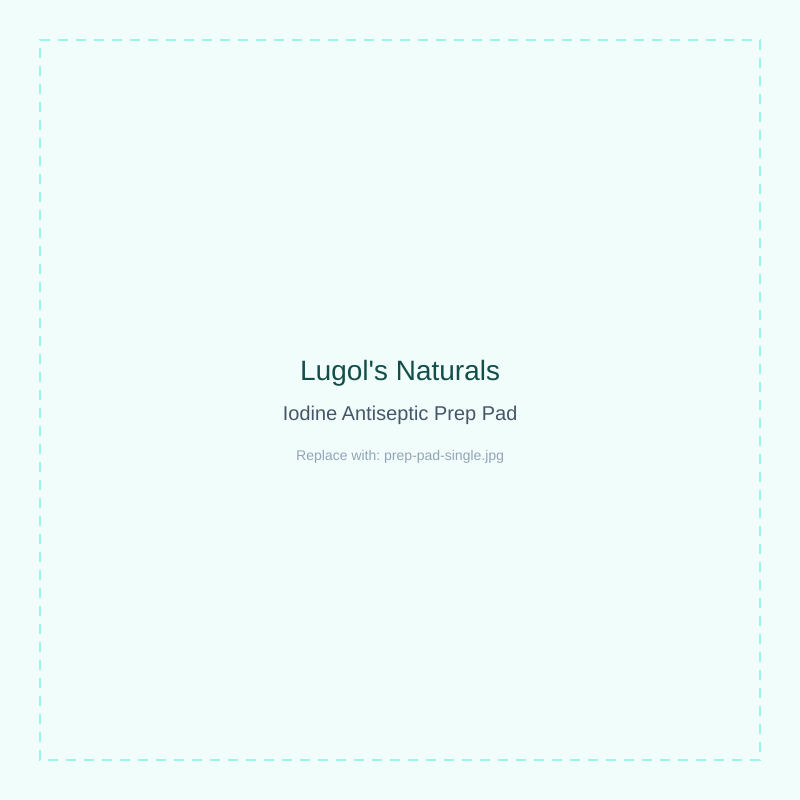
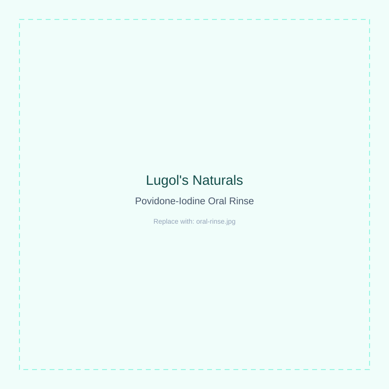

Iodine Teat Dip
Antiseptic Dairy Solution · 1 Gallon (3.78 L)
Barrier teat dip formulated to protect against environmental and contagious mastitis pathogens between milkings.
$24.99
An Iodine Company. Nothing Else.
Lugol's Naturals manufactures the full spectrum of iodine antiseptics — teat dips, udder washes, povidone-iodine solutions, and clinical-grade first-aid essentials.

Who We Are
Lugol's Naturals exists to do one thing exceptionally well: formulate and manufacture iodine-based antiseptic solutions. We don't dabble in adjacent categories or dilute our focus — every product we ship, from teat dips to surgical preps, is built on the same iodine chemistry and the same standard of potency.
That specialization is the point. Dairy producers and medical professionals trust us because we don't treat iodine as a side ingredient — it's the entire business.
100%
Iodine-Based Line
9
Core Formulations
2
Industries Served
Teat dips and udder washes built for daily parlor use.
Povidone-iodine solutions, pads, sprays, and oral rinse for antisepsis.
Every formulation is batch-tested for available iodine content before it leaves our facility — no exceptions across the line.
Full Product Line
Retail pricing below. Authorized dealers order by the case at wholesale rates through the Dealer Portal.
Antiseptic Dairy Solution · 1 Gallon (3.78 L)
Barrier teat dip formulated to protect against environmental and contagious mastitis pathogens between milkings.

Antiseptic Dairy Solution · 1 Gallon (3.78 L)
Pre-milking cleanser that removes debris and bacteria while conditioning teat skin for parlor efficiency.

First Aid · 10% Solution · 1 Gallon (3.78 L)
Broad-spectrum 10% povidone-iodine for skin antisepsis before procedures. For external use only.

First Aid · Sterile · Box of 100
Single-use sterile prep pads for quick skin antisepsis prior to injections or minor procedures.

First Aid · Sterile · Box of 100
Saturated swabsticks for precise, single-use antiseptic application in clinical and field settings.

First Aid · Sterile · 0.5 fl oz (15 mL) Single-Use
Travel- and kit-friendly single-use sachets, ideal for first-aid kits and field treatment bags.

First Aid · Sterile · Box of 50
Individually wrapped iodine prep pads for fast, single-application skin antisepsis.

Oral Care · 8 fl oz
Antiseptic oral rinse formulated for short-term use as directed. See Drug Facts label for full directions and warnings.
First Aid · 4 fl oz
No-touch spray application for minor cuts, scrapes, and field antisepsis. For external use only.
Authorized dealers get wholesale case pricing across the full line through the secure Dealer Portal.
Go to Dealer Portal →Every batch is verified for available iodine content before it ships.
Formulated for real-world use — fast contact time, durable barrier protection.
We sell wholesale only through a vetted dealer network to protect product integrity and pricing.